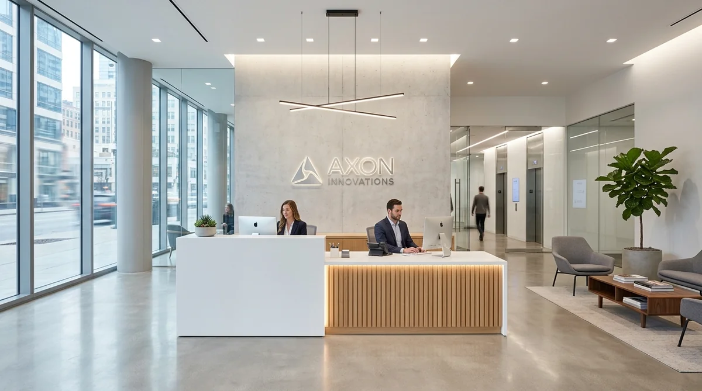
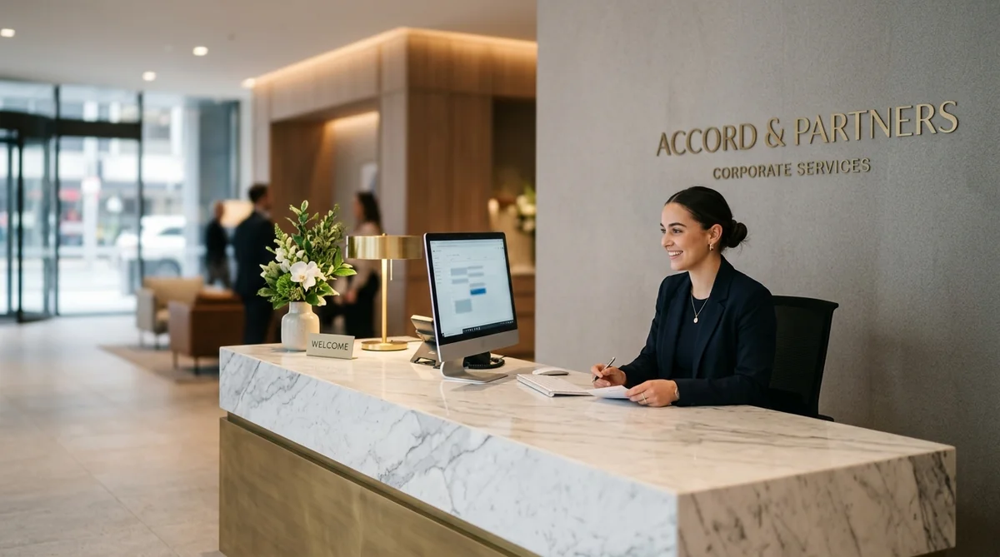

Rekomendasi Meja Resepsionis Minimalis Modern untuk Lobby Kantor
Menghadirkan meja resepsionis minimalis modern di area lobi menciptakan impresi profesional perdana yang prestisius bagi tamu, klien bisnis, maupun calon investor perusahaan Anda.


Aksen modern meja resepsionis modular berlapis HPL kayu jati natural dan panel marmer sintetis dengan integrasi cable box rapi.
- First Impression Korporat: Area resepsionis mewakili 78% persepsi awal profesionalitas dan kredibilitas brand perusahaan di mata tamu.
- Ergonomi Dua Level (Dual-Tier): Mengakomodasi ketinggian transaksi tamu (105-115 cm) dan area kerja staf front desk (75 cm) secara optimal.
- Material Tahan Lama: Kombinasi rangka Plywood/MDF grade E1 dengan laminasi HPL tahan gores, tahan noda cairan, dan mudah disanitasi.
- Manajemen Jalur Kabel Rapi: Dilengkapi wire snake, pop-up power socket, dan ruang penyimpanan perangkat komputer tersembunyi.
- Mengapa Meja Resepsionis Menjadi Titik Krusial Desain Kantor?
- Kriteria Utama Meja Resepsionis Minimalis Modern yang Berkualitas
- Tabel Komparasi Material Meja Resepsionis Lobi Kantor
- Rekomendasi Tipe dan Tata Letak Meja Resepsionis
- Bagaimana Menghitung Estimasi Harga Meja Lobi Kantor?
- Keunggulan Pemesanan Meja Resepsionis di PerlengkapanKantor
- Pertanyaan Seputar Meja Resepsionis Minimalis Modern
- Kesimpulan Praktis
Mengapa Meja Resepsionis Menjadi Titik Krusial Desain Kantor?
Meja resepsionis bertindak sebagai focal point visual di area lobi yang langsung membentuk kesan pertama (first impression) kredibilitas perusahaan.
Lobi kantor bukan sekadar lorong penghubung antar ruangan, melainkan panggung representasi citra merek (corporate branding). Ketika tamu, investor, mitra bisnis, atau kandidat rekrutmen memasuki gedung, meja resepsionis adalah perhentian pertama yang mereka tuju. Desain meja yang tertata apik, bersih dari kabel berserakan, dan memancarkan estetika arsitektur modern akan secara instan membangun rasa percaya (trust signal).
Berdasarkan riset Commercial Workspace & Interior Architecture Survey 2025/2026, sekitar 83,6% eksekutif bisnis menyatakan bahwa visual lobi yang tertata profesional memberikan dampak positif langsung terhadap kesepakatan bisnis dan reputasi perusahaan. Sebaliknya, meja front desk yang kusam, sempit, atau berantakan dapat menurunkan citra korporat secara drastis dalam 10 detik pertama kedatangan tamu.
Kriteria Utama Meja Resepsionis Minimalis Modern yang Berkualitas
Meja resepsionis minimalis mengutamakan proporsi garis geometris yang tegas, integrasi teknologi kabel tersembunyi, dan zonasi fungsional antara staf dan tamu.
Untuk mendapatkan furnitur front office yang ergonomis dan elegan, pastikan memenuhi kriteria standar arsitektur interior berikut:
- Struktur Dual-Tier (Dua Ketinggian): Sisi depan memiliki konter privasi tamu setinggi 105–115 cm yang berfungsi untuk menandatangani buku tamu atau berkas. Di sisi dalam, meja staf berada pada ketinggian ergonomis 72–75 cm sehingga monitor, keyboard, dan dokumen kerja tersembunyi rapi dari pandangan publik.
- Sistem Manajemen Kabel Terintegrasi (Smart Cable Trunking): Dilengkapi lubang grommet berbahan aluminium, cable spine fleksibel, serta pop-up socket yang memuat colokan listrik, kabel LAN (RJ45), dan USB charger tanpa kabel yang menjulur ke lantai.
- Pencahayaan Aksen Tersembunyi (Hidden Ambient LED): Penambahan LED profile strip warna warm white (3000K) atau natural white (4000K) di bagian bawah toe-kick atau di balik panel logo memberikan dimensi kemewahan yang tenang dan futuristik.
- Material Ramah Lingkungan & Tahan Lama: Penggunaan papan kayu olahan berstandar emisi rendah (E1/E0 CARB Phase 2) dengan pelapis tahan gores dan tidak berbau menyengat.

Tata letak internal meja front office dengan kompartemen laci berkunci sentral dan ruang penempatan CPU komputer yang rapi.
Tabel Komparasi Material Meja Resepsionis Lobi Kantor
Mengetahui kelebihan dan kekurangan tiap bahan dasar membantu Anda menentukan pilihan yang paling sesuai antara estetika, daya tahan, dan alokasi anggaran.
| Material & Finishing | Keunggulan Utama | Ketahanan & Perawatan | Kisaran Estimasi Biaya |
|---|---|---|---|
| MDF / Blockboard + HPL | Paling populer, banyak pilihan motif kayu/solid, bobot presisi, pengerjaan cepat | Tahan gores, tahan panas ringan, sangat mudah dibersihkan | Ekonomis - Menengah (Rp3,5jt - Rp6,5jt per meter lari) |
| Plywood + Duco Paint | Tampilan mulus seamless tanpa garis sambungan, elegan untuk nuansa monokrom | Permukaan mewah, butuh kehati-hatian dari benturan benda tajam | Menengah - Premium (Rp5,5jt - Rp8,5jt per meter lari) |
| Solid Surface / Marmer Sintetis | Tampilan sangat mewah, tanpa pori-pori (non-porous), tahan air 100%, dapat ditekuk lengkung | Sangat awet, noda minyak/kopi tidak meresap, mudah dipoles ulang | Premium - Luxury (Rp8,5jt - Rp15jt+ per meter lari) |
| Rangka Metal Powder Coating | Struktur super kokoh, gaya industrial minimalis, anti rayap selamanya | Tahan beban berat, tahan kelembapan lantai lobi gedung tinggi | Menengah (Rp4,5jt - Rp7,5jt per meter lari) |
Rekomendasi Tipe dan Tata Letak Meja Resepsionis
Penyesuaian konfigurasi meja dengan geometri ruang lobi memastikan kelancaran sirkulasi alur jalan (traffic flow) pengunjung kantor.
Terdapat tiga konfigurasi utama yang paling banyak diadopsi untuk gedung perkantoran modern di Indonesia:
- Model Straight Linear (Lurus Minimalis): Sangat cocok untuk area lobi berukuran kompak hingga sedang (luas lobi 15–35 m²). Desain ini ramping, memaksimalkan ruang jalan tamu, dan sangat efisien untuk 1 hingga 2 staf resepsionis.
- Model L-Shape (Sudut Multifungsi): Memberikan zonasi terpisah antara area penyambutan tamu di sisi depan dan area administrasi/telepon di sisi sayap. Sangat ideal untuk lobi yang membutuhkan ruang pengarsipan dokumen fisik langsung di front desk.
- Model Curved / U-Shape (Lengkung Dinamis): Menjadi primadona pada lobi utama kantor pusat korporasi besar atau rumah sakit swasta. Bentuk lengkung tanpa sudut tajam memberikan impresi ramah, futuristik, dan mampu melayani volume pengunjung yang tinggi dari berbagai sudut masuk.
Bagaimana Menghitung Estimasi Harga Meja Lobi Kantor?
Perhitungan harga meja resepsionis ditentukan oleh dimensi panjang per meter lari, tingkat spesifikasi material dasar, aksen dekoratif, dan fitur mekanikal internal.
Berdasarkan data pengadaan furnitur komersial dari Indonesia Office Furniture Index 2025, komponen pembentuk anggaran meja resepsionis terbagi menjadi:
- Dimensi & Volume Papan (45%): Semakin panjang meja dan bertingkat panelnya, semakin banyak lembaran papan plywood atau MDF yang digunakan.
- Material Finishing & Edging (30%): Pilihan jenis HPL (tekstur kayu matte, gloss, anti-fingerprint, atau motif marmer Calacatta) serta sistem edging PVC 2mm dengan mesin lem panas otomatis.
- Fitting Hardware & Kunci (15%): Penggunaan rel laci slow-motion/soft-close, engsel hidrolik, dan master central lock untuk keamanan dokumen staf.
- Aksesoris Elektrikal & Logo (10%): Profil aluminium LED tersembunyi, trafo power supply industrial, serta pembuatan logo korporat akrilik timbul berlampu (backlit signage).
Keunggulan Pemesanan Meja Resepsionis di PerlengkapanKantor
PerlengkapanKantor menyediakan layanan kustomisasi furnitur kantor berkualitas pabrikasi presisi dengan garansi konstruksi resmi hingga 2 tahun.
Kami memahami bahwa setiap lobi memiliki identitas arsitektur dan luas ruang yang unik. Dengan memilih layanan pemesanan furnitur kantor di PerlengkapanKantor, Anda memperoleh jaminan:
- Konsultasi Desain & Layout 3D Gratis: Tim desainer interior kami membantu memvisualisasikan model meja dalam ruangan Anda sebelum proses fabrikasi dimulai.
- Material Premium Bersertifikasi: Menggunakan plywood meranti dan HPL bermerek ternama dengan ketahanan aus tinggi.
- Pengerjaan Rapi & On-Time: Didukung mesin pemotong otomatis berbasis CNC untuk hasil potongan sudut presisi tanpa cacat.
- Instalasi Profesional & Delivery Jabodetabek: Tim teknisi berpengalaman langsung merakit dan menguji fungsi elektrikal di lokasi kantor Anda.
Pertanyaan Seputar Meja Resepsionis Minimalis Modern
Kesimpulan Praktis
Investasi pada meja resepsionis minimalis modern adalah langkah strategis untuk memperkuat citra profesional perusahaan dan meningkatkan efisiensi operasional staf front desk. Wujudkan konsep lobi kantor impian Anda bersama tim spesialis kami.
Penulis: Tim Spesialis Perlengkapan Kantor
Tim kurasi dan perancangan interior kantor PerlengkapanKantor yang berfokus pada estetika fungsional, furnitur custom korporat, dan optimasi tata ruang lobi modern di Indonesia.